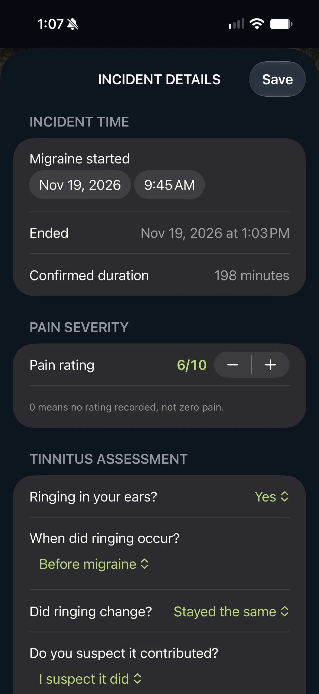
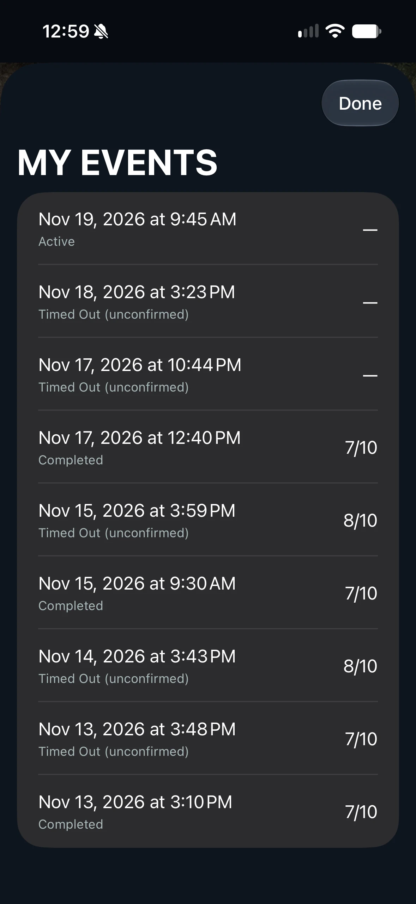
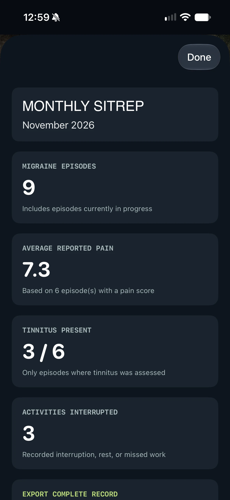
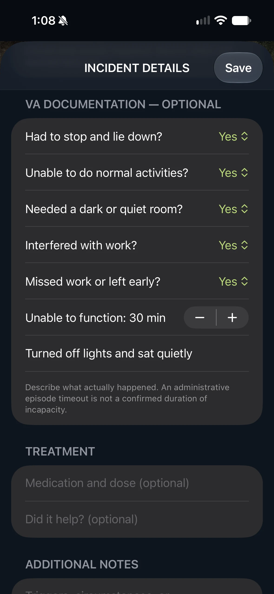

BUILT FOR VETERANS. BY A VETERAN.
Migraine SITREP — Migraine Tracking for Veterans.
Document migraine episodes, track their effect on daily life, and keep organized records with an iPhone app designed by a U.S. Navy veteran.
THE MISSION
Every episode tells a story. Capture the details.
When migraines interrupt daily life, having accurate records matters. Migraine SITREP helps you record episode times, symptoms, severity, and functional impact, with optional questions designed for VA-related documentation.
The app is awaiting approval for release on the Apple App Store.
- Episode start, end, and duration
- Pain intensity and associated symptoms
- Daily-life and occupational impact
- Episode history and monthly summaries
- Optional VA-focused questions and CSV export
SEE THE APP
A closer look at Migraine SITREP.
Five screens from the current iPhone app, showing how you can record episodes, review history, and document functional impact.
Image asset pending

Start a new migraine log or access your history.
Image asset pending

Record symptoms, severity, and timing.
Image asset pending

Review and manage past episodes.
Image asset pending

See a summary of your migraine history.
Image asset pending

Capture functional limitations with optional VA questions.
SIMPLE PRICING
One payment. $1.99
No subscription. Migraine SITREP is designed to make consistent migraine documentation accessible and straightforward.
MIGRAINE DOCUMENTATION
A migraine diary designed for clear, consistent records.
Record when a migraine begins and ends, its severity, symptoms, and how it affects work or everyday activities. Migraine SITREP lets you review past episodes and monthly summaries instead of relying on memory when discussing symptoms with a healthcare provider.
Optional questions for VA-related documentation
Veterans can enable VA-focused questions to document functional limitations alongside their migraine history. You can turn these questions off in Settings when they are not needed. Exportable CSV records help keep your own notes organized for appointments or claim preparation; the app does not determine eligibility or replace medical evidence.
Private iPhone migraine tracking
Records are stored locally on your device, with optional Apple Health integration. There is no required account, cloud database, or subscription.
COMMON QUESTIONS
Migraine SITREP FAQ
What should I record in a migraine diary?
Log the start and end time, symptoms, severity, possible triggers, and how an episode affected daily activities or work. Consistent entries can help you explain your history accurately to a clinician.
Can Migraine SITREP help organize notes for a VA disability claim?
Yes. Optional VA-focused questions and episode reports are designed to help veterans organize their own migraine documentation. The app is not affiliated with the VA and does not guarantee any claim outcome.
Does Migraine SITREP require a subscription?
No. The listed price is $1.99 as a one-time purchase, subject to App Store availability.
Where is my migraine information stored?
Migraine information is stored on your iPhone, with optional Apple Health support when enabled. Review our privacy information for details.
VETERAN RESOURCE
How to document migraines for VA disability claims
Learn what 38 CFR § 4.124a, Diagnostic Code 8100, and the official VA Headaches DBQ say about migraine frequency, prostrating attacks, and functional impact.
PRIVACY & RESPONSIBLE USE
Your records. Your control.
Migraine SITREP stores migraine information on your device, with optional Apple Health support. It is for personal symptom documentation, not medical diagnosis or emergency monitoring. The app is independent of, and not endorsed by, the U.S. Department of Veterans Affairs. Records do not guarantee a VA claim outcome.